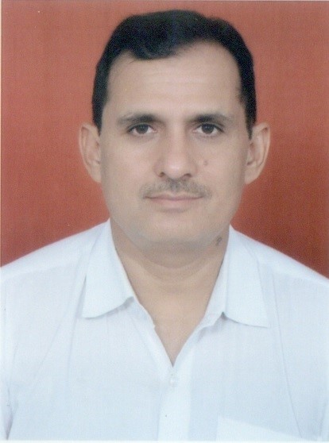

Professor, Department of Civil Engineering
Malaviya National Institute of Technology Jaipur
Specialization: Water Resources Modelling, Management
and Geospatial Technologies
Prof. Mahesh Kumar Jat is Professor in the Department of Civil Engineering at Malaviya National Institute of Technology Jaipur. He has more than 25 years of teaching and research experience in the fields of Water Resources Modelling, Remote Sensing, GIS, Urban Hydrology, Land Use/Land Cover Modelling, Climate Change Impact Assessment and Integrated Water Resources Management.
He has guided 19 Ph.D. scholars and more than 38 M.Tech. dissertations. He has published 100+ research papers, books and book chapters in reputed international journals and conferences. He has also executed and is currently working on several sponsored research and consultancy projects.